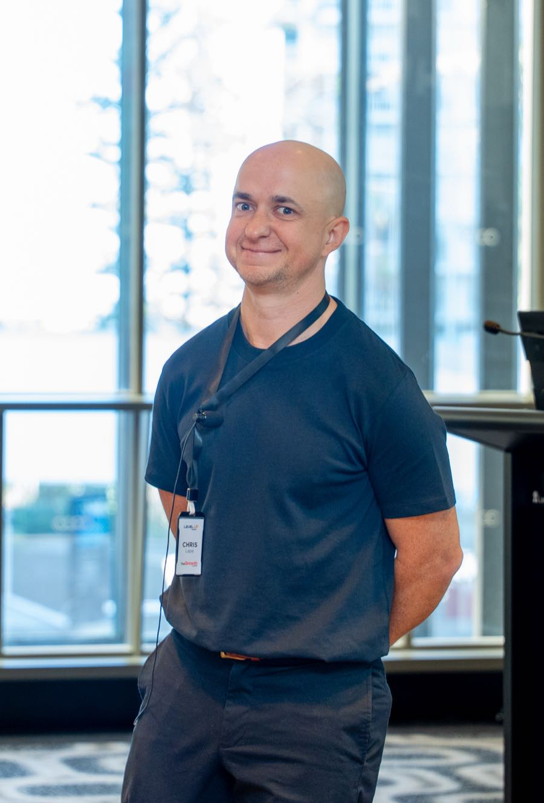
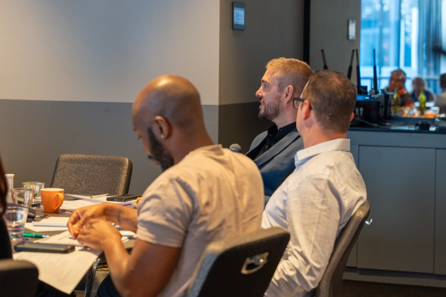

Managed Growth
Every channel, one point of contact, reported in plain English.
Some providers want one channel fixed. Some want the whole thing run properly.
This is for the second group.
I take ownership of your marketing, referral strategy and sales process support across all channels. SEO, Google Ads, social media ads, email, organic content, referral partnerships and enquiry process. Planned together, executed together, reported together. One person manages the account: Chris.
How it runs
Chris runs your account, start to finish
You are not handed to a junior account manager after the sales call. One person knows your business, your market, your team and your numbers, start to finish. When you have a question, you call that person directly.
This is the trade-off with a founder-led service: you get deep sector knowledge and continuity, and in return I work with a smaller number of providers at any given time. That is intentional.

Monthly reporting you can actually read
Every month you receive a report covering:
- Enquiries generated, by channel.
- Cost per enquiry.
- Page-one rankings and organic traffic growth.
- Social engagement and audience growth.
- Referral activity.
- What is working, what is not, and what I recommend changing.
Written in plain language, with every figure connected to something you can act on. If a channel is underperforming, the report says so and recommends a specific change.

Everything on this site, run as one connected plan
- NDIS SEO: suburb landing pages, Google Business Profile, content.
- Google Ads: search campaigns, landing pages, call and form tracking.
- Social media ads: Meta campaigns, creative, retargeting.
- Email marketing: enquiry sequences, referrer nurture, newsletters.
- Social and content: content calendar, platform strategy, posting.
- Referrals and partnerships: coordinator outreach, allied health connections, tracking.
- Sales process: enquiry handling, intake coaching, follow-up systems.
Not every provider needs every channel from day one. I scope the engagement based on where you are now and what will move the number fastest, and add channels as the foundation builds.
The strategy adjusts based on what is actually happening
Every quarter I review the full strategy against results. What has changed in your market, your capacity, your services. Whether the budget allocation across channels still makes sense. Where to increase investment and where to pull back.
This is the difference between an agency running a set-and-forget campaign and a growth partner adjusting the plan as the business evolves.
Managed Growth is the right fit for some providers. Not all.
A good fit if
You want marketing, referrals and sales process handled as one connected plan. You want a single person who knows your business managing the work. You have the budget for a proper multi-channel engagement, and you do not want to manage an in-house marketing team.
Better served elsewhere if
You only need one channel fixed, in which case start with the individual service pages. You want to run your own marketing and just need coaching. Or your budget is under what a multi-channel engagement requires, and I will tell you honestly.
I would rather point you to the right service than sell you the wrong one.
If the work is not earning its place, you should not be trapped paying for it
This runs on a monthly retainer with no lock-in contract. I ask for a three-month initial commitment so there is enough time to build and measure properly. After that, you stay because the work is delivering, not because a contract says you have to.
What providers ask
How much does Managed Growth cost?
It depends on the scope: which channels, how many suburbs, how much content. This is a premium engagement because it covers everything and is run by the founder, not a team of juniors. I scope and price it properly after the initial audit. If it is beyond your budget, I will recommend which individual channel to start with instead.
How is this different from hiring a marketing manager?
A marketing manager is one person with a salary, leave entitlements, and a learning curve in your sector. This gives you a senior growth strategist who already knows the NDIS sector, plus execution across channels, without the overhead of a full-time hire. The trade-off: I am not in your office every day, but I am across your numbers every month and available when you need me.
Can I start with one channel and upgrade later?
Yes. A lot of providers start with Google Ads or SEO and expand once they see results. The individual channel work feeds into this naturally, because I already know your business, your data and your market.
How many clients do you take on at once?
A small number. This is a high-involvement engagement and I will not take on more providers than I can serve properly. If I am at capacity, I will say so and recommend an alternative or put you on a waitlist.
Find out what Managed Growth looks like for your provider
The audit is free.